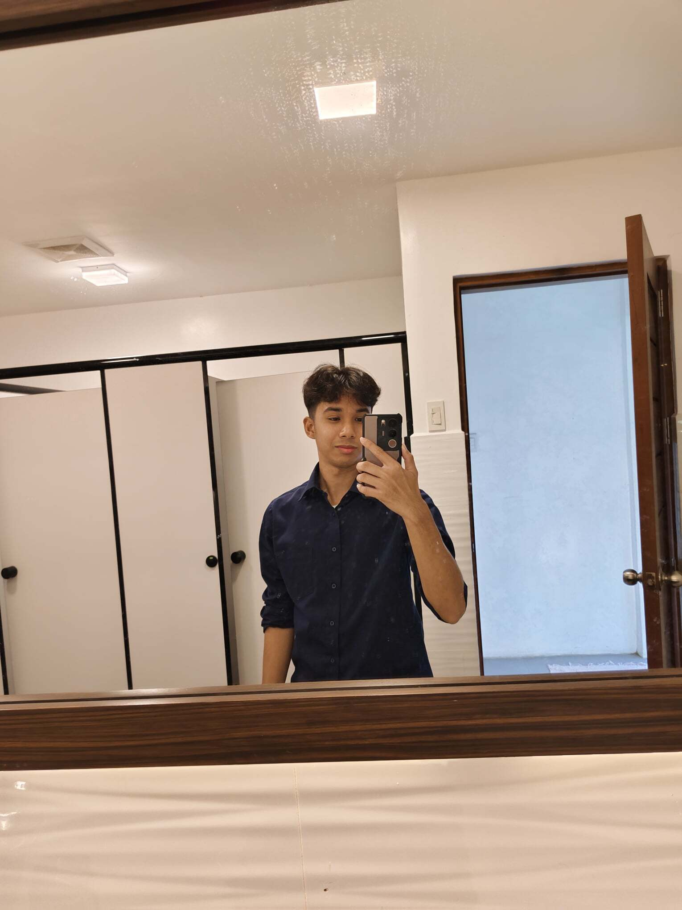

Computer Science Student
 Let's Work Together!My name is John Angelo Esguerra, and I'm a dedicated learner seeking a Computer Science Bachelor of Science degree
at Calamba's City College. I'm in my third year there right now. My motivation for pursuing a degree has come
from my love of technology and solving problems, which has allowed me to explore a number of computer science fields
and hone my skills in data interpretation, software engineering, and programming. For one to be an effective
have a degree in computer science and am always learning new things through challenging classes and practical projects.